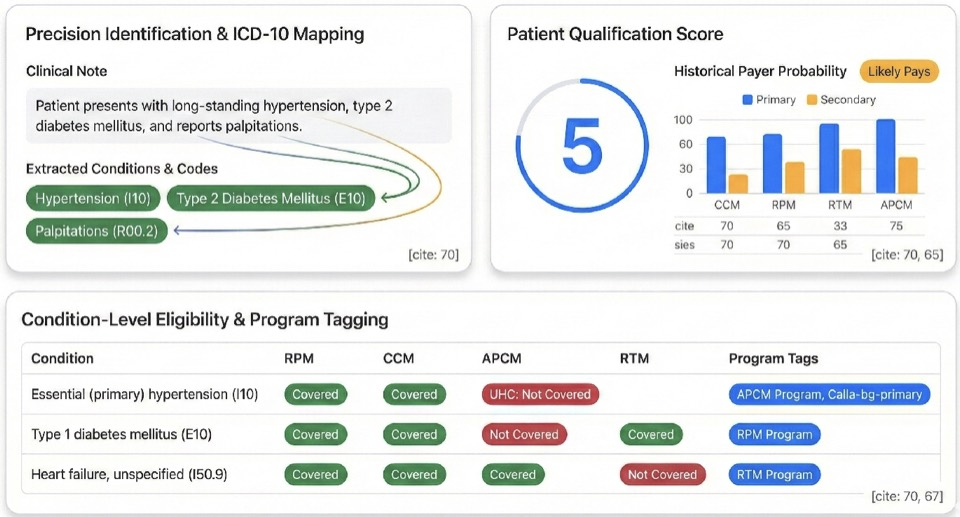

Intelligence Factorywith FairPath
Overview1 / 16
Two-Part Growth Plan for {{PHARMACY_NAME}} - July {{YEAR}}
You've already built a local pharmacy home.
Here are two ways to make it easier to find -- and easier to extend.
Validate remote care with a manageable patient group. Then strengthen the verified website so patients and providers can find, trust, and act.
Path 1 - Start remote care
Path 2 - Strengthen the website
Prepared for
{{CONTACT_NAME}}
{{CONTACT_TITLE}} - {{PHARMACY_NAME}}
{{MARKET_NAME}}
Presented by
{{SALES_REP_NAME}}
Intelligence Factory · FairPath
Intelligence Factorywith FairPath
Why This Plan2 / 16
How We Help Pharmacies and Clinics Grow
Make more money. Cut costs. Save time.
Intelligence Factory and FairPath help pharmacies and clinics launch new care programs, attract more patients, and reduce manual work through automation and one connected platform.
New revenueLaunch remote care
{{REMOTE_CARE_REVENUE_OPPORTUNITY}}
RPMCCMAWVRTMAPCM
More patientsAttract patients
{{WEBSITE_AND_LOCAL_DISCOVERY_OPPORTUNITY}}
Less manual workAutomate one platform
{{AUTOMATION_AND_PLATFORM_VALUE}}
Intelligence Factorywith FairPath
Proof Period3 / 16
A Lower-Risk Way To Bring Remote Care Home
Prove it for 90 days
Use FairPath with a real first patient group. Keep going because the workflow is useful, measurable, and manageable for the team.
90
Days to prove it works
If the workflow is not ready to scale, pause with a clear record of what was tested, what worked, and what needs to change.
1
Load the population fast
Any export; the first patient group can be scored and prioritized within five business days after usable data is received.
2
Train the people doing the work
Role-based launch training plus scheduled workflow sessions for the first patient wave.
3
Measure before you scale
Review active patients, owners, exceptions, capacity, documentation, and billing readiness.
Start with a manageable group
Review at 30 / 60 / 90 days
Keep control of the relationship
Confirm terms before launch
Intelligence Factorywith FairPath
Path 1 - Remote care4 / 16
Remote Care Growth Path
Prove the first patient group before scaling
The first step is not billing everyone. It is scoring the patient population, choosing the first manageable group, and proving the workflow over 90 days.
RPM
Remote monitoring with connected devices.
CPT 99453 / 99454 / 99457
CCM
Monthly chronic care coordination.
CPT 99490
AWV
Annual wellness visits and risk review.
G0438 / G0439
High-potential pathAPCM
Ongoing care-plan support, patient communication, and follow-through for higher-need patients.
CPT 99424 / 99425 / 99426 / 99427
Service expansionRTM
Therapy adherence and patient-reported progress for musculoskeletal, respiratory, and related care paths.
CPT 98975 / 98976 / 98977 / 98980 / 98981
Scoring supports staff review; it does not guarantee eligibility, enrollment, coverage, payment, or reimbursement.

FairPath eligibility scoring - how a first patient group gets shortlisted.
Intelligence Factorywith FairPath
FairPath Workflow5 / 16
One Clear Remote-Care Workflow
Know who to call first, what needs attention, and what is ready
Less searching, fewer hand-built records, clearer handoffs, and earlier visibility into incomplete work.
01
Open the priority queue
Start from the patients most likely to fit the first program wave.
02
See the patient context
Review eligibility, payer signals, care gaps, and outreach history in one place.
03
Connect, document, confirm readiness
Calls, notes, care-plan work, exceptions, and billing readiness stay with the patient.
AI helps the team see what needs attention next; people stay responsible for review, judgment, and care decisions.

One queue for outreach, documentation, and follow-through.
Intelligence Factorywith FairPath
Path 2 - Opportunity size6 / 16
Opportunity Size
A rural service area where the pharmacy can stay close to patients
Directional planning figures for sizing a first patient group -- a starting point for the conversation, not a forecast.
Estimated
6,500
Service-area residents
{{MARKET_NAME}} plus nearby rural communities in north {{COUNTY_OR_SERVICE_AREA}}.
Estimated
1,495
Medicare beneficiaries
6,500 residents x 23% rural Medicare planning assumption.
Estimated
~4
Local physicians
6,500 x 55 per 100,000, rounded; about 3 offices or clinics.
Fewer local prescribers means more of the follow-up falls between visits -- which is exactly where a pharmacy-led program can help.
Population, Medicare share, and physician density are {{YEAR}} order-of-magnitude planning assumptions. They have not been validated against Census, CMS, or provider-directory data.
Intelligence Factorywith FairPath
Path 2 - Remote care7 / 16
Illustrative Economics
What patient participation could look like
Illustrative
Estimated Medicare market x assumed share who join x illustrative gross billing per enrolled patient = illustrative annual gross billing.
| Starting point |
Share who join |
Patients |
Example per patient / year |
Example annual gross billing |
| A cautious start | 1.0% of 1,495 | 15 | $1,200 | $17,940 |
| Steady growth | 2.5% of 1,495 | 37 | $1,200 | $44,850 |
| Strong participation | 5.0% of 1,495 | 75 | $1,200 | $89,700 |
Examples only -- not a promise.
Gross billing is not net revenue or profit. Payer rules, current rates, program mix, billable months, staffing, devices, denials, collections, compliance, and partner economics all still require validation.
Intelligence Factorywith FairPath
Where you stand8 / 16
What's Already Working
{{PHARMACY_NAME}} already has the foundation customers need
The public site, CRM facts, and business-panel evidence all point to the same local pharmacy identity.
Verified
Local identity aligns
Company record, NPI, phone, email, and storefront address match across sources.
Verified
Live official website
Homepage and contact page returned 200 over HTTPS, with a working page inventory.
Observed
Independent positioning
The homepage describes an independent pharmacy set in the heart of {{MARKET_NAME}}, NC.
This is a modernization plan, not a basic-presence rescue. The starting point is stronger than most independents we review.
VerifiedConfirmed in more than one source.
ObservedSeen in a public page or audit sample.
EstimatedDirectional planning math, not a forecast.
Not verifiedNot checked yet -- no claim made.
Intelligence Factorywith FairPath
Where you stand9 / 16
The Gap
Make the next customer action obvious
The current site is real and useful. The opportunity is in what search engines and AI assistants cannot read from it yet: page structure, service facts, and clear next steps.
{{MARKET_NAME}}pharmacy.com

Keep this current-site proofLive local site, HTTPS, clear pharmacy identity, and {{MARKET_NAME}} location language already in place.
What the audit could not find
Observed audit gaps from sampled pages -- not ranking or traffic claims.
MissingMeta descriptions on sampled pages
MissingExtracted H1s that state each page's purpose
MissingJSON-LD LocalBusiness / Pharmacy schema
ThinService detail and conversion CTAs
UnverifiedReviews, testimonials, and credential proof
Intelligence Factorywith FairPath
Where you stand10 / 16
Path 2 - Website Growth
A practical modernization of the site you already have
The audit scores each area of the existing site so the work can start where it moves the needle most -- no rebuild-everything pitch.
Observed
5/10
Local SEO foundation
Solid identity and crawlability, held back by missing on-page structure.
Technical crawlability7/10
Accessibility & media6/10
Audit scores are internal planning signals from a sampled crawl on {{YEAR}}-07-27. They are not traffic, ranking, or performance measurements.
Intelligence Factorywith FairPath
Path 2 - Website11 / 16
What the Website Adds
Turn the services page into pages that answer real questions
{{MARKET_NAME}}pharmacy.com/services

The services page exists todayReal content is already written -- it just all lives on one page.
Further down the same pageThree more real services sit collapsed behind "+" toggles, with no page of their own to be found by.
Where it can go further
Confirm the services actually offered, then give each one a searchable home: service-specific titles, H1s and descriptions; FAQs and Pharmacy / LocalBusiness schema; and a call, visit, or directions CTA on every page.
Owned source of truth
Better search snippets
Service confidence -- confirmed services only
Intelligence Factorywith FairPath
Path 2 - Website12 / 16
Immediate Opportunity
Help more {{MARKET_NAME}} neighbors find you, trust you, and act
Three jobs the site has to do. Each one has a specific, observed gap behind it.
Find
Discovery
Missing descriptions, H1s, and schema make the site harder for search engines and AI assistants to summarize.
Observed
Trust
Credibility
Local positioning is already there. Approved proof -- credentials, team, community -- can make it more convincing.
Proof not verified
Act
Conversion
Phone and contact details were found. Refill, transfer, and form workflows still need confirmation before we promote them.
Partly observed
Intelligence Factorywith FairPath
Path 2 - Website13 / 16
Sourced Competitor Comparison
What nearby options show online
A focused public check shows {{MARKET_NAME}} has a real official site -- and the clearest opportunity is to add the action language chains already make obvious.
{{PHARMACY_NAME}}
Official site, services page, and contact page verified. Services page includes vaccines and prescription language; contact page matches {{PHARMACY_ADDRESS}} and (910) 652-6261.
Nearby independents
NPPES names Medical Center, Medical Park, Sandhills, and Birmingham Drug. In this pass, sites were coming-soon, for-sale, not found, or not confidently verified.
Chains in {{COMPETITOR_MARKET_1}}
CVS, Walgreens, and Walmart pages visibly emphasize refill, transfer, vaccines, store details, delivery/photo/clinic-style convenience, and app/account actions.
Where {{MARKET_NAME}} can win: keep the local independent story, then make the official site as action-ready as the chain pages: verified services, hours, pharmacist/team proof, FAQs, refill/transfer guidance if supported, vaccines, directions, and contact actions.
Sources checked NPPES, {{MARKET_NAME}} official pages, Medical Center Pharmacy site, likely independent domains, and CVS/Walgreens/Walmart public pages. This is not a map-pack, ranking, or review audit.
Intelligence Factorywith FairPath
Recap14 / 16
What This Plan Is Built To Do
Start fast without giving up control
The pharmacy keeps the patient relationship, the operating decision, and the ability to continue from evidence - while the plan connects new services, better discovery, and less manual coordination.
Make more moneyAdd remote care services
Launch RPM, CCM, AWV, RTM, and APCM from a scored first patient group instead of guessing where to begin.
Attract patientsMake the pharmacy easier to find
Improve the website, local discovery, service pages, reputation signals, SEO, and LLM-ready patient answers.
Cut costs / save timeUse automation and one platform
Reduce handoffs with one workflow for scoring, outreach, documentation, billing support, reporting, and follow-through.
Prove value in the first 90 days, keep what works, and adjust what does not.
Intelligence Factorywith FairPath
Two Paths15 / 16
Two Clear Starting Paths
Start today, then show progress quickly
The pharmacy can start with remote care, the website, or both together. Each path has a concrete first milestone.
Path 1 - Remote careScore patients within five days
Today
Agreement, BAA, export request, and owners named.
5 days
Population scored and the first priority outreach group selected.
30 days
First participating patients billing-ready or active when consent, documentation, payer, and operational fit are confirmed.
Path 2 - Website growthNew website foundation by next week
Today
Start the build from verified facts, services, current proof, and top patient actions.
1 week
Launch the new website foundation with improved SEO, LLM-ready answers, and integrated service pages.
1 month
Add reputation management, service campaigns, measurement, and ongoing improvements.
Billing timing depends on eligibility, consent, services provided, documentation, payer rules, and operational readiness. Website timing depends on content approvals and access.
Intelligence Factorywith FairPath
Next step16 / 16
Choose a Starting Path
Which path should we start with?
1
Website first
Confirm services and modernize the highest-impact pages.
2
Remote care first
Choose a manageable patient group and validate the fit.
3
Both together
Improve discovery while testing patient support between visits.
Intelligence Factorywith FairPath
{{SALES_REP_NAME}}
Intelligence Factory
{{SALES_REP_EMAIL}}
Contact details shown are our own. Any prospect email pattern referenced in supporting notes is observed and tentative until independently confirmed.